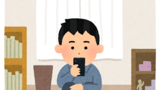

先輩の時間割 【工学部第二部】人間科学科目を紹介します！ こんにちは！広報局の大場です。 履修登録が始まりましたが、皆さん履修は決まりましたか？今回は履修登録の迷いどころであろう人間科学科目を紹介したいと思います！筆者が履修した・履修した知り合いから聞いた情報、つまり実際に履修してみてどう感... 2020.04.22 先輩の時間割
 先輩の時間割 【工学部第二部】先輩の時間割 こんにちは！二部広報局の早川です。 プレ履修登録が始まりましたね。みなさんはもう履修する科目を決めましたか？お待たせしました！今回は工学部第二部（夜間学部）の３つの学科の先輩に、自分が１年生の前期に組んだ時間割について伺ってまいりまし... 2020.04.21 先輩の時間割
先輩の時間割 【工学部】先輩の時間割 こんにちは！広報局の中村です。 プレ履修登録が始まりましたね。みなさんはもう履修する科目を決めましたか？今回は工学部の6つの学科の先輩に、自分が１年生の前期に組んだ時間割について伺ってまいりました！是非参考にしてみてください！ ... 2020.04.21 先輩の時間割
先輩の時間割 【システムデザイン工学部】先輩の時間割 こんにちは！広報局の齋藤です。 そろそろ履修登録が始まりますね。みなさんはもう履修する科目を決めましたか？今回はシステムデザイン工学部の2つの学科の先輩に、自分が１年生の前期に組んだ時間割について伺ってまいりました！是非参考にしてみて... 2020.04.21 先輩の時間割
先輩の時間割 【未来科学部】先輩の時間割 こんにちは！広報局の早川です。 そろそろ履修登録が始まりますね。みなさんはもう履修する科目を決めましたか？今回は未来科学部の３つの学科の先輩に、自分が１年生の前期に組んだ時間割について伺ってまいりました！是非参考にしてみてくださいね！... 2020.04.21 先輩の時間割
先輩の時間割 【1年前期】先輩の時間割公開します！ こんにちは 旭祭実行委員会です。 例の流行病の影響で履修登録の時期や授業回数、授業形態が例年とは違い私たちもあたふたしております。特に新入生は先輩からの情報が少ないため、不安も多いと思います。そこで、例年であれば入学後すぐの勧... 2020.04.19 先輩の時間割
 先輩の時間割 先輩の時間割
先輩の時間割 先輩の時間割